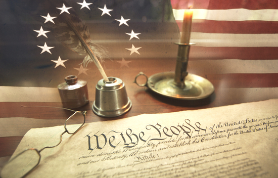
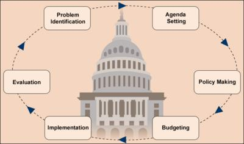

Basic Civics education
Constitution: The rules of our democracy.

Citizenship: Citizens have rights, responsibilities and duties in our democracy.

Three Branches: The Legislative, Executive and Judicial Branches make, enforce and interpret the laws of our land.

Political Process: We know how campaigns are run and how.
